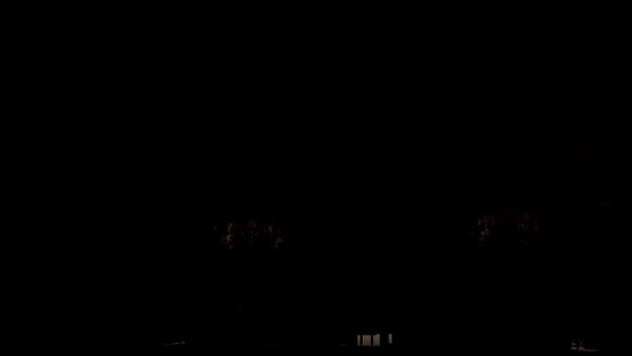

Representation · Storytelling
This course presents contemporary methods of digital representation for landscape architects. There will be an intensive exploration of the methodologies, techniques, and theories occurring in digital representation in the typical landscape architecture office. We will also explore appropriate CG techniques in other visual arts industries in order to expand our repertoire of skills. While focusing on creating images and animations from 3d animation software there will also be an intense focus on the art of storytelling within representation — the way a sequence of rendered frames is composed into a narrative that conveys the essence of a place. The seminar is structured around weekly assignments that build toward the mid-term and final assignments; all of the weekly assignments are required.
Representation & storytelling — digitalLA 4101
The assignment
About the seminar
Advanced Digital Representation is an upper-level seminar in the Louisiana State University School of Landscape Architecture. The course presents contemporary methods of digital representation for landscape architects — an intensive exploration of the methodologies, techniques, and theories at work in digital representation in practice, alongside appropriate computer-graphics techniques drawn from the broader visual arts industries.
Instructor: Bradley Cantrell. Meeting: Monday, Wednesday, and Friday, 10:40–12:30, in the CADGIS Cypress Lab. Software: 3ds max / Autodesk VIZ, AutoCAD, Photoshop, and Illustrator, with optional work in After Effects, Premiere, and V-Ray.